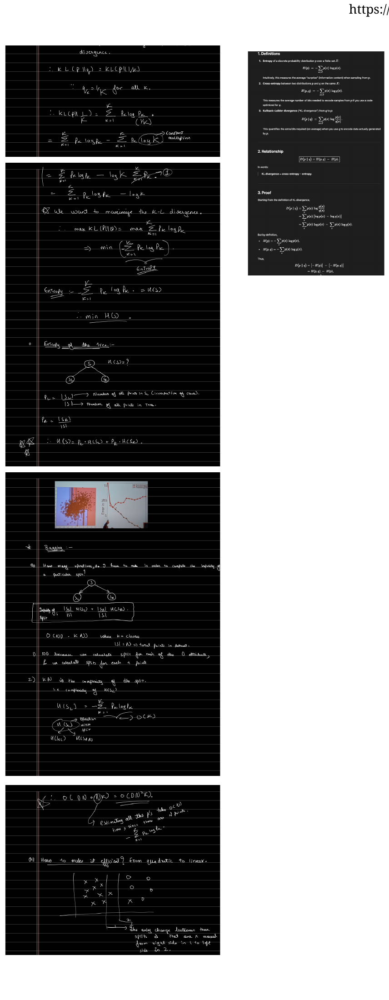
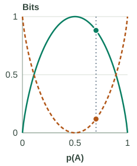

Entropy from KL Divergence
Why does minimizing Shannon entropy prefer skewed class distributions over balanced ones? The handwritten scan answers by measuring how far a node's class distribution $P$ departs from the discrete uniform distribution $U$. Here we step through that exact algebra, clarify a small constant-sign slip in the handwritten line, and trace every benchmark class split all the way to the true $100/0$ pure endpoint.
Keep the reference distribution and class count $K$ fixed
Let $P = (p_1, \dots, p_K)$ be the empirical class distribution inside a tree node over $K \ge 2$ possible classes, where $p_k \ge 0$ and $\sum_{k=1}^K p_k = 1$. Let $U = (1/K, \dots, 1/K)$ be the discrete uniform reference over those same $K$ classes. In binary classification ($K = 2$), $U = (0.5, 0.5)$ even when a child node contains zero examples of class B: an absent class has $p_k = 0$, rather than shrinking $K$ from $2$ to $1$.
Using base-2 logarithms so every quantity is measured in bits, Shannon entropy is
A $50/50$ binary node has maximum uncertainty $H(P) = 1$ bit; a genuinely pure $100/0$ node has $H(P) = -1\log_2 1 - 0 = 0$ bits.
Exact KL-to-uniform algebra and the constant-sign check
The Kullback–Leibler (KL) divergence from the uniform reference $U$ to the node distribution $P$ averages the log-likelihood ratio $\log_2\bigl(p_k / u_k\bigr)$ under $P$:
- Rewrite the quotient inside the logarithm: dividing by $1/K$ multiplies by $K$, so $\log_2\bigl(p_k / (1/K)\bigr) = \log_2 p_k - \log_2(1/K) = \log_2 p_k + \log_2 K$.
- Distribute the sum over $k = 1, \dots, K$: $\sum_{k=1}^K p_k(\log_2 p_k + \log_2 K) = \sum_{k=1}^K p_k \log_2 p_k + (\log_2 K)\sum_{k=1}^K p_k$. Since $\sum_{k=1}^K p_k = 1$, the second term equals $+\log_2 K$.
- Substitute Shannon entropy: because $H(P) = -\sum_{k=1}^K p_k \log_2 p_k$, we have $\sum_{k=1}^K p_k \log_2 p_k = -H(P)$, yielding $D_{\text{KL}}(P \parallel U) = \log_2 K - H(P)$.
Because $\log_2 K$ is fixed across every node of a $K$-class classification problem, minimizing node entropy $H(P)$ is algebraically identical to maximizing $D_{\text{KL}}(P \parallel U)$—pushing child distributions as far from uniform uncertainty as possible.


Check a 70/30 mixture and benchmark splits up to 100/0
For $P = (0.70, 0.30)$ and $U = (0.50, 0.50)$ ($K = 2$, so $\log_2 K = 1$ bit), check that summing the signed class contributions matches $1 - H(P)$:
Class A term: $0.70 \log_2(0.70 / 0.50) \approx \mathbf{+0.339799\text{ bits}}$ | Class B term: $0.30 \log_2(0.30 / 0.50) \approx \mathbf{-0.221090\text{ bits}}$.
Direct KL sum: $+0.339799 - 0.221090 = \mathbf{0.118709\text{ bits}}$.
Via entropy complement: $H(P) = -0.70\log_2 0.70 - 0.30\log_2 0.30 \approx \mathbf{0.881291\text{ bits}}$, and $1 - 0.881291 = \mathbf{0.118709\text{ bits}}$.
Notice that an individual summand $p_k \log_2(p_k / u_k)$ is negative whenever $p_k < u_k$; Gibbs' inequality guarantees only that the complete sum $D_{\text{KL}}(P \parallel U) \ge 0$. Comparing binary class splits side by side also shows why a $98/2$ split must never be labeled "pure":
| Class Split $P = (p_A, p_B)$ | Entropy $H(P)$ (bits) | A Term $p_A\log_2(2p_A)$ | B Term $p_B\log_2(2p_B)$ | $D_{\text{KL}}(P \parallel U)$ (bits) | Node Regime |
|---|---|---|---|---|---|
| 50 / 50 $(0.50, 0.50)$ | $1.000000$ | $+0.000000$ | $+0.000000$ | $0.000000$ | Uniform ($P = U$, max entropy) |
| 70 / 30 $(0.70, 0.30)$ | $0.881291$ | $+0.339799$ | $-0.221090$ | $0.118709$ | Worked mixed node |
| 75 / 25 $(0.75, 0.25)$ | $0.811278$ | $+0.438722$ | $-0.250000$ | $0.188722$ | Moderately skewed |
| 90 / 10 $(0.90, 0.10)$ | $0.468996$ | $+0.763197$ | $-0.232193$ | $0.531004$ | KL exceeds entropy ($> 0.5$ bit) |
| 98 / 2 $(0.98, 0.02)$ | $0.141441$ | $+0.951437$ | $-0.092877$ | $0.858559$ | Nearly pure (not pure: $H > 0$) |
| 100 / 0 $(1.00, 0.00)$ | $0.000000$ | $+1.000000$ | $0.000000$ ($0\log_2 0:=0$) | $1.000000$ | True pure endpoint ($H = 0$) |
Because the derivative $\frac{d}{dp}(-p\log_2 p)$ diverges logarithmically as $p \to 0^+$, even a $2\%$ minority class at $98/2$ contributes $0.141441$ bits of uncertainty. Only at $100/0$ (or $0/100$ by symmetry), where $0\log_2 0 := 0$, does entropy hit $0$ bits and $D_{\text{KL}}(P \parallel U)$ reach the full $\log_2 2 = 1$ bit.
Entropy and KL share $\log_2 2 = 1$ bit between them
Keep $U = (0.5, 0.5)$ fixed while changing $p_A$. The solid entropy curve $H(P)$ and dashed divergence curve $D_{\text{KL}}(P \parallel U)$ sum to $1$ bit everywhere.
Compare the full curves

Selected mixture: 70% A, 30% B
- Label uncertainty
- H(P) = 0.881291 bits
- Divergence from uniform
- D_KL(P ‖ U) = 0.118709 bits
- Sum: H(P) + D_KL(P ‖ U)
- 0.881291 + 0.118709 = 1.000000 bit
Green shows $H(P)$; amber shows $D_{\text{KL}}(P \parallel U)$. Bar lengths represent bits, not class proportions.
Worked mixture: P = (0.70, 0.30); U = (0.50, 0.50).
A term: 0.70 × log₂(0.70/0.50) = +0.339799 bits.
B term: 0.30 × log₂(0.30/0.50) = −0.221090 bits.
Completed D_KL = 0.118709 bits. This node is mixed, not pure.
Separate entropy, cross-entropy, and asymmetry
For true label distribution $P$ and predicted distribution $Q$, cross-entropy $H(P, Q) = -\sum_{k=1}^K p_k \log_2 q_k$ decomposes into $H(P, Q) = H(P) + D_{\text{KL}}(P \parallel Q)$. When $Q = U = (1/K, \dots, 1/K)$, every outcome receives probability $1/K$ so $H(P, U) = \log_2 K$ regardless of $P$, recovering $\log_2 K = H(P) + D_{\text{KL}}(P \parallel U)$ immediately.
Remember that KL divergence is asymmetric: at $P = (0.70, 0.30)$ and $U = (0.50, 0.50)$, $D_{\text{KL}}(P \parallel U) \approx 0.118709$ bits whereas $D_{\text{KL}}(U \parallel P) = 0.5\log_2(0.5/0.7) + 0.5\log_2(0.5/0.3) \approx 0.125769$ bits. See KL divergence foundations for the full Gibbs' inequality proof.
Parent entropy vs. weighted child entropy (information gain)
At the bottom of the scan, $\frac{n_L}{n}H(P_L) + \frac{n_R}{n}H(P_R)$ denotes the conditional label entropy remaining after splitting on a candidate threshold. Subtracting it from parent entropy $H(P)$ yields information gain—and because $\frac{n_L}{n} + \frac{n_R}{n} = 1$ with a fixed $K$, maximizing information gain equals maximizing the size-weighted increase in $D_{\text{KL}}(\cdot \parallel U)$:
Verify all benchmark splits and the 0 log₂ 0 := 0 limit in Python
import math
def h_and_kl_binary(p_a):
p_b = 1.0 - p_a
term_h = lambda p: 0.0 if p == 0.0 else -p * math.log2(p)
term_kl = lambda p: 0.0 if p == 0.0 else p * math.log2(p / 0.5)
H = term_h(p_a) + term_h(p_b)
t_a, t_b = term_kl(p_a), term_kl(p_b)
return H, t_a, t_b, t_a + t_b
for p_a in [0.50, 0.70, 0.75, 0.90, 0.98, 1.00]:
H, t_a, t_b, kl = h_and_kl_binary(p_a)
assert abs((H + kl) - 1.0) < 1e-12
print(f"{int(round(p_a*100)):3d}/{int(round((1-p_a)*100)):<3d} | H={H:.6f} | A={t_a:+.6f} | B={t_b:+.6f} | KL={kl:.6f}")The next companion turns to $O(N\log N)$ threshold sweeps, regression leaf means, and cost-complexity pruning.
Sources and next steps
- Cornell CS 4780: Decision Trees — The uniform-reference KL derivation followed in the handwritten notes.
- Stanford EE 376A: Entropy and Relative Entropy — Shannon entropy, KL non-negativity, and cross-entropy identities.